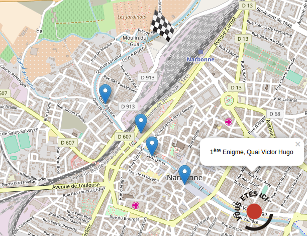
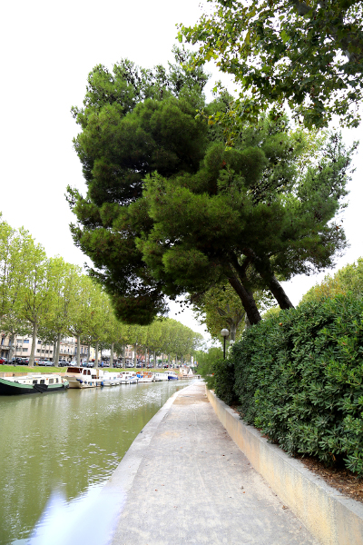

1ère Enigme
QUAI VICTOR HUGO


Vers 1820, sous l’effet de la mévente du blé local, Narbonne renverse sa production pour culture du vin. Le vignoble passe de 10 000 hectares à la fin du XVIIIème siècle à 30 000 hectares en 1852 et 58000 hectares en 1873.
Question :
Repère sur la rive le groupe de pins de la photo de gauche et découvre ce que les hommes y ont accroché.
exact
faux